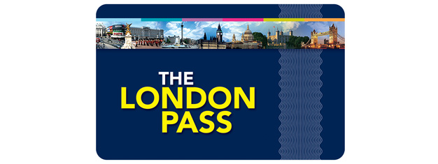

Londra:Posti Da Vedere
- Madame Toussauds London [45 Euro]
- Big Ben
- British Museum
- Buckingham Palace [35 Euro]
- Wembley [35 Euro]
- Saint Paul Cathedral [21 Euro]
- Emirates Stadium [25 Euro]
- Warner Bros Studio Tour [78 Euro]
- Hyde Park
- King's Cross
- London Market
- London Eye [28 Euro]
- Castello Winsor
- National Gallery
- Natural History Museum
- Neal's Yard
- Notting Hill
- Osservatorio Di Greenwich
- Oxford Street
- Piccadilly Circus
- Regent's Park
- Sherlock Holmes Museum [18 Euro]
- Sky Garden
- Stamford Bridge [25 Euro]
- Stonehenge
- Tate Modern
- Torre Di Londra [28 Euro]
- Tower Bridge [13 Euro]
- Trafalgar Square
- Victoria Albert Museum
- Westminister Abbay [55 Euro]
- Zoo [36 Euro]




Conviene